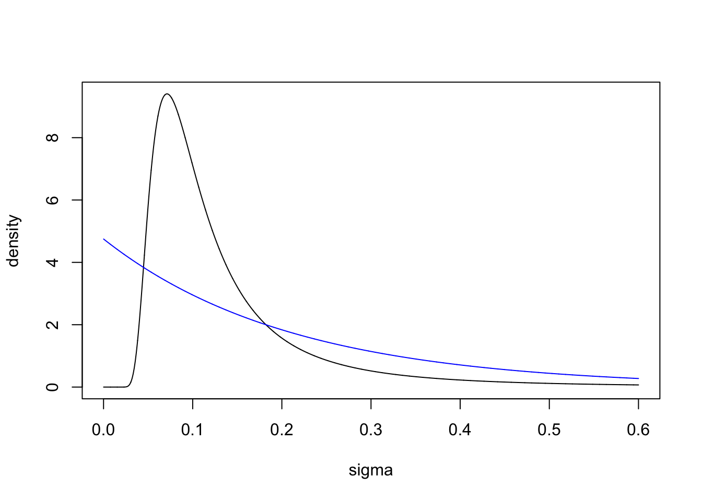

In this topic I explain the PC (Penalizing Complexity) priors, with insights from my personal point of view.
TODO: Rewrite this from a more applied point of view, further away from the PC paper.
Assume you have a Generalised Additive Model (GAM): \[\begin{align} y &\sim \text{Likelihood}(\eta) \\ \eta &= f_1(x_1) + f_2(x_2) + f_3(x_3) \\ f_1(x_1) &\sim \mathcal N(0, Q_1^{-1}(\theta_1)) \end{align}\] Here, \(y\) is the response, an can follow “any usual” likelihood (Gaussian, Poisson, Binomial, etc). The \(f_1\) is the first model component, and it is a function of covariate \(x_1\). All the model components have a Gaussian distribution, specifically for \(f_1\) we use the Gaussian distribution with precision matrix \(Q_1^(\theta_1)\), which depends on hyperparameters \(\theta_1\) (usually 1-3 parameters).
Many authors refer to the choice of the precision matrix as the prior for \(f_1\), however, this is not what we call a prior (this we call for \(f_1\)). What we call priors are the priors on the hyperparameters (\(\theta\)’s).
library(ggplot2)
set.seed(2021)Assume \[Q_1 = \tau R_1 \] where
\(\tau\) is the hyperparameter called
prec (because it scales the precision matrix), and \(R_1\) is some precision matrix. The
following arguments are very general, but to simplify the example, the
reader can assume that \(R_1\) is the
identity matrix, i.e.
\[Q_1 = \tau I. \] The marginal
variance of \(f_1\) is then \(1/\tau\), and the marginal standard
deviation is \[\sigma = \tau^{-1/2}.
\]
A common prior for the \(\tau\) is the exponential prior, also known as a Gamma prior, \[\pi_o(\tau) = \Gamma(1, b)(\tau) = b e^{-b \tau} \] where \(b\) is a small number, e.g. 0.001.
We transform this to a prior on \(\sigma\), for use later: \[\pi_o(\tau) = 2 b \sigma^{-3} e^{-b \sigma^{-2}} \]
The prior I use, which is the PC prior (more on that later), is an exponential prior on \(\sigma\), \[\pi(\sigma) = \lambda e^{-\lambda \sigma}, \] where \(\lambda\) could e.g. be 0.1. This can be transformed into a prior on \(\tau\), \[\pi_n(\tau) = \frac{\lambda}{2} \tau^{-3/2} \exp(-\lambda \tau^{-1/2}). \] This distribution happens to be called a type-2 Gumbel distribution.
b = 0.0076
lambda = 4.75
tau = seq(0.0001, 200, length.out=1E4)
pri.tau.old = b*exp(-b*tau)
pri.tau.new = lambda/2 * tau^(-3/2) *exp(-lambda * tau^(-1/2))
plot(tau, pri.tau.old, type="l", ylim=c(0, max(c(pri.tau.old, pri.tau.new))), ylab="density")
lines(tau, pri.tau.new, col="blue")sigma = seq(0.0001, 0.6, length.out=1E4)
pri.sig.old = 2*b*sigma^(-3) *exp(-b*sigma^(-2))
pri.sig.new = lambda*exp(-lambda*sigma)
plot(sigma, pri.sig.old, type="l", ylim=c(0, max(c(pri.sig.old, pri.sig.new))), ylab="density")
lines(sigma, pri.sig.new, col="blue")
Why is the “old” prior (black line) bad? For the precision, it is hard to say anything about what the right shape is. However, for \(\sigma\), we do not want a prior that pushes us away from 0. Values of \(\sigma\) near 0 are very meaningful, and represent simpler models than large values of sigma do. The “old” prior forces overfitting in cases where the model component should not be used.
Consider the AR(1) model \[u_{t+1} = \rho u_t + z_t \] where \(z\) is iid Gaussian (e.g. \(\mathcal N(0, 1)\)), and \(\rho \in [0, 1)\)
We want to put a prior on \(\rho\).
Naively, we could say that we use a uniform prior, since that is a proper prior in this case. However, that is very very bad. The problem is that the model at \(\rho=0.5\) is very similar for the model at \(\rho=0.55\), but the model at \(\rho=0.94\) is very different from the model at \(\rho=0.99\)
To figure out what prior to put, we have to generalise the exponential prior on \(\sigma\) to a general concept.
The main paper on PC priors is Simpson et al. (2017). Instead of copying text from the paper here, we will refer to specific parts of the paper.
The PC prior assumes that there is a base model, a simpler sub-model that we can shrink towards, when a parameter is set to a certain value.
For our first example, the base model is \(\sigma=0\) (\(\tau = \infty\)). In this case the size of the model component is zero, and the model component is no longer there. For our AR1 example, one can argue that \(\rho=0\) and \(\rho=1\) are both base model, and the PC prior paper does. In general any value of \(\rho\) could be considered a base model, and each such choice would lead to a different prior. However, I think only \(\rho=1\) is a natural base model, due to a reduced model component complexity, and a reduced chance of overfitting.
See Simpson et al. (2017) section 2.5 page 6. D1-D8.
The prior should be informative. We want the prior to be sceptical of introducing complexity in the model. If we see uninformative data, we want the result to be a simple model. In other words we want to bias estimates towards simplicity. When the model changes so should the prior. Of course, if the definition of the model component changes, we might have a completely different prior.
The prior should be based on the effect of the parameter, not on the parameters values. So, any reparametrisation, e.g. \(\tau = \sigma^{-2}\) should give the same outse for defining the prior.
See Simpson et al. (2017) section 3 page 7. Principle 1-4.
Principle 1: More complex models are more penalised than simpler models. I.e. more complex models have less prior mass (per unit change in model structure).
Principle 2: The model complexity is measured by the KLD. Let \(\xi\) be our chosen parametrisation, with \(\xi=0\) the base model, then \[d(\xi) = \sqrt{2 KLD(\pi(u|\xi), \pi(u|\xi=0))} \]
Principle 3: For \(\sigma\) in example 1, the correct prior is the exponential function. This generalises to an exponential prior on \(d(\xi)\).
Principle 4: The \(\lambda\) in the exponential prior should be set by the user, and depends on the choice of likelihood and the scale of the response variable.
The PC prior for the AR1 process is as follows.
library(INLA)corvals = seq(0.01, 0.99, length.out = 1000)
d = inla.pc.dcor1(corvals, lambda=1)
plot(corvals, d, type="l")There is a large density around 1, where the base model is. The
closer we get to 1, the more different the models are (in a \(\Delta \rho\)). Therefore, the prior
density goes to infinity. To get the mathematical expression for the
prior, print the function inla.pc.dcor1.